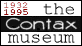
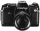
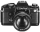
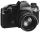
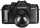
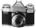
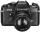
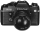
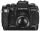
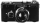
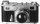
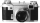
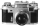
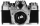
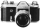
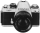
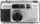
Contac I
Introduced in 1932
The first Contax I introduced by Zeiss Ikon was designed by Dr.Heinz Kupponbender, the project's leader.Contac II
Introduced in 1934
This and the Contax III was introduced by World Was II, and was to be the start of a unique camera productline.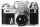
Contax III
Introduced in 1936
This camera was, as the model II, manufactured before the World War II.Contax IIa
Introduced in 1950
This is the modernized version of the Contax II. Production of both the IIIa and this one was dicontinued in 1961.Contax IIIa
Introduced in 1951
As with the IIa this is a modernized version of the III. This too was discontinued in 1961.Contaflex Introduced in 1953
To cope with the transition into the age of SLR's, Carl Zeiss came out with the Contaflex, a high-grade leaf-shutter SLR.Contarex I
Introduced in 1953
This model was the world's first exposure meter coupled focal-plane shutter SLR.Contax RTS
Introduced in 1974
This was the new Contax camera that got everybodys attention when introduced at the 1974 Photokina. The RTS (Real-Time System) showed the future caracterstics of a future oriented system camera.CONTAX 139
Introduced in 1979
This camera model employed the world's first quartz oscillator for controlling shutter speeds, which controlled camera function sequences to within a micro-second's accuracy. Adopted by all high-grade cameras to come.Contax RTS II
Introduced in 1982
This model had some minor changes to improve the accuracy, durability and stability.CONTAX 137 MD
Introduced in 1980
The Contax 137MD marketed in 1980 was the world's smallest built-in motor drive SLR camera.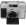
Contax T
Introduced in 1984
This came out six years before the Contax T2 and opened a new world of high-grade leaf-shutter cameras.CONTAX 159mm
Released in 1985
An upgrade version of the 139, the 159mm featured a maximum shutter speed of 1/4000 sec, and X sync. of 1/250 sec and three exposure modes. Was highly popular among advanced amateurs.CONTAX 167 MT
Introduced in 1987
This was the world's first multimode SLR camera with 3-frame automatic bracketing function. It handled a continuos shooting function with up to 3 frames per sec.Contax RTS III
Introduced in 1990
For the first time in the world employs a film plane falttening mechanism by means of a vacuum system in order to bring the full potential of Carl Zeiss lenses.Contax T2
Introduced in 1990
This camera opened up a new world of high-grade leaf-shutter cameras. It was selected as the '91-92 European Compact Camera of the Year.Contax S
This camera has been known to be the father of modern 35mm SLRs. To commemorate the 60th anniversary of Contax, the Contax S2 based on this camera.Contax S2
Introduced in 1992
This camera was introduced to celebrate the 60th anniversary of Contax in 1992. It has a vertical travel mechanical metal focal-plane shutter with a top speed of 1/4000 sec and a flash sync. of 1/25 sec or slower not to be outdone by electronic shutter cameras.
Email comments.. or Back to the HomePage.
{kind=link}
{kind=link}
{kind=link}
{kind=link}
{kind=link}
{kind=link}
{kind=link}
{kind=link}
{kind=link}
{kind=link}
{kind=link}
{kind=link}
{kind=link}
{kind=link}
{kind=link}
{kind=link}
{kind=link}
{kind=link}